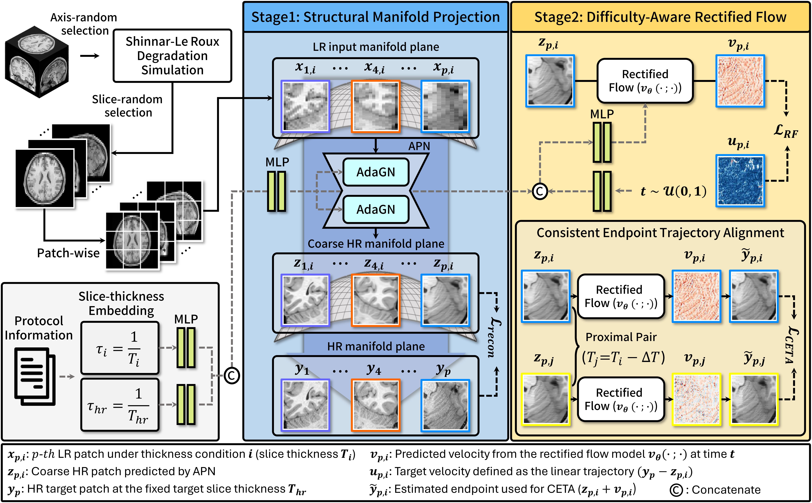
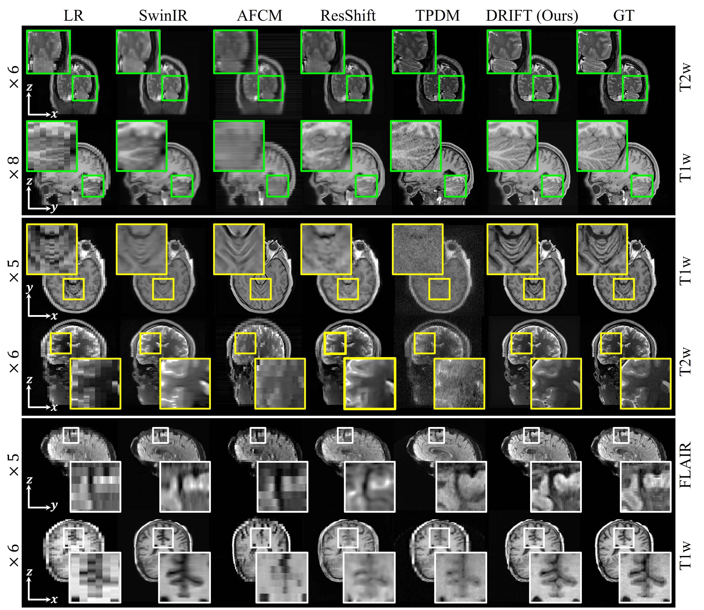
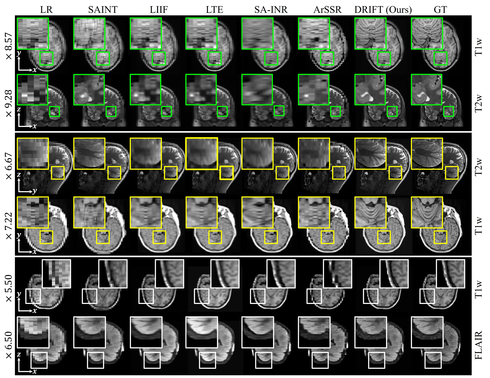
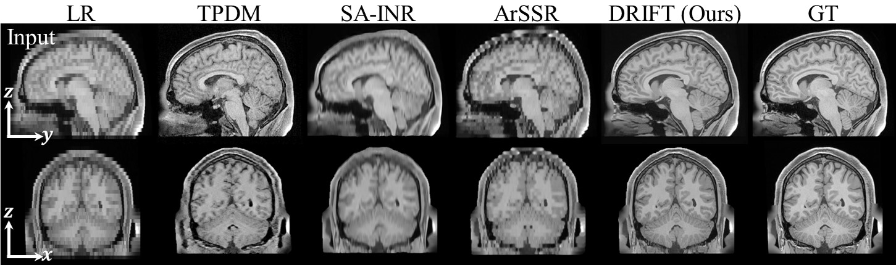
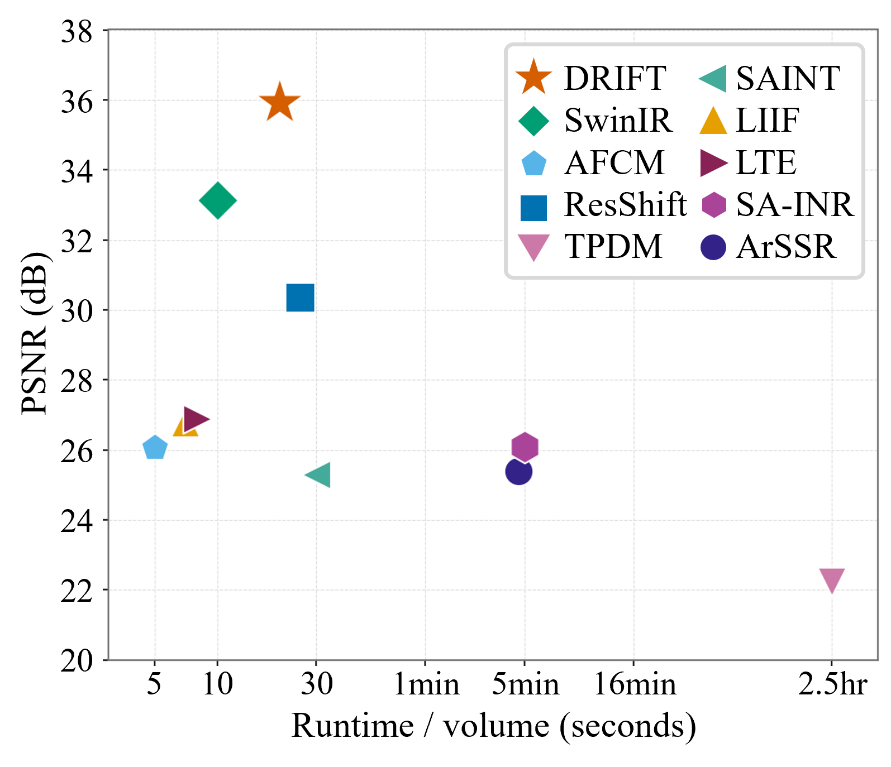
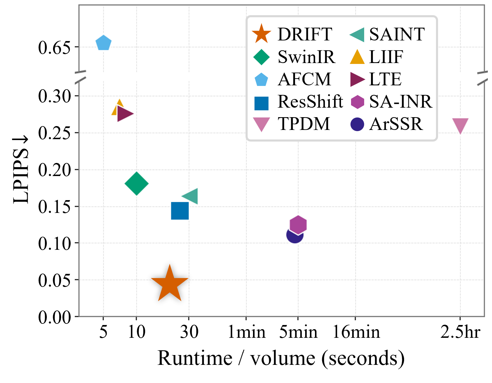
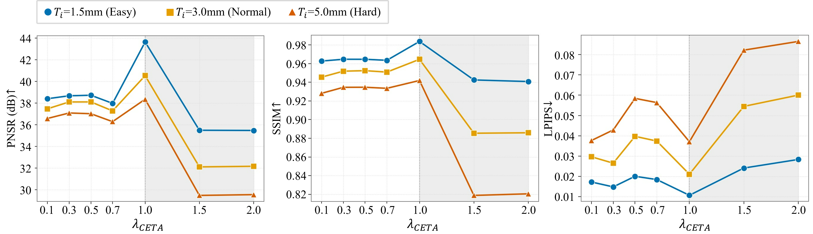
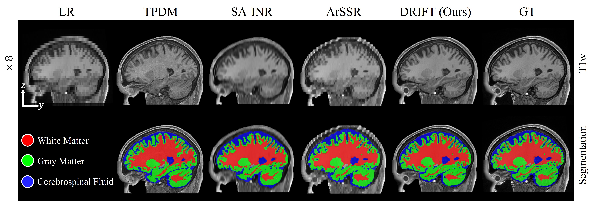
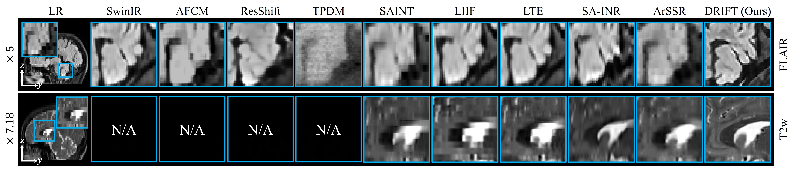
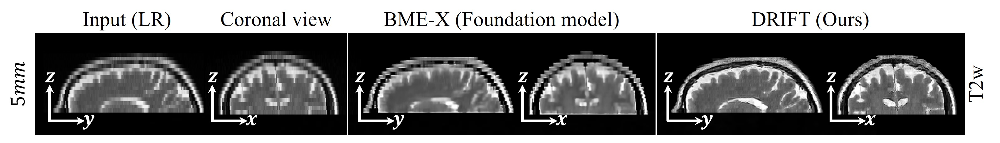

Magnetic Resonance Imaging (MRI) is often acquired with anisotropic resolution to reduce scan time, producing stair-step artifacts along the through-plane direction. In through-plane MRI super-resolution, an efficiency–fidelity trade-off arises: feed-forward regressors are fast but oversmooth at large slice-thicknesses, while sampling-based methods improve fidelity at high inference cost. We propose DRIFT, a two-stage thickness-conditioned rectified flow framework for through-plane MRI super-resolution with continuous input slice-thickness. Stage 1 employs an Anatomical Projection Network (APN) to map low-resolution patches to a coarse high-resolution manifold, providing a deterministic anatomical initialization that shortens the residual transport of Stage 2. Stage 2 refines details via rectified flow and introduces a Physics-Aware Difficulty (PAD) metric, derived from the slice-thickness-induced through-plane bandwidth deficit, to guide an Adaptive Integration Scheduler (AIS) that allocates ODE steps by thickness. A Consistent Endpoint Trajectory Alignment (CETA) loss enforces thickness-consistent reconstructions. DRIFT outperforms super-resolution baselines while reducing inference cost.
What makes DRIFT work.
An Anatomical Projection Network maps thick-slice LR patches onto a coarse HR manifold in a single deterministic step, shortening the residual transport the flow must cover.
A rectified flow refines the coarse prediction, conditioned on continuous input slice-thickness and regularized by a Consistent Endpoint Trajectory Alignment (CETA) loss for thickness-consistent outputs.
A Physics-Aware Difficulty score, derived from the through-plane bandwidth deficit of each slice-thickness, drives an Adaptive Integration Scheduler that spends more ODE steps on thicker (harder) inputs and fewer on thin ones.
Training pipeline: Shinnar–Le Roux degradation simulation, structural manifold projection (APN), and a difficulty-aware rectified flow with CETA.

Sweeping through the volume — thick-slice low-resolution input (left) vs. DRIFT reconstruction to isotropic resolution (right). Each panel is annotated with its acquisition resolution and slice thickness.
Drag the handle: thick-slice LR input on the left, DRIFT reconstruction on the right. Switch the dataset below.







Applied to real clinical scans without retraining or fine-tuning — no isotropic ground truth available.


@inproceedings{choi2026drift,
title = {DRIFT: Difficulty-aware Rectified Flows for Through-plane MRI Super-Resolution},
author = {Choi, Yoonseok and Ha, Eun-Gyu and Kim, Daniel and
Al-masni, Mohammed A. and Yang, Ming-Hsuan and Kim, Dong-Hyun},
booktitle = {European Conference on Computer Vision (ECCV)},
year = {2026}
}